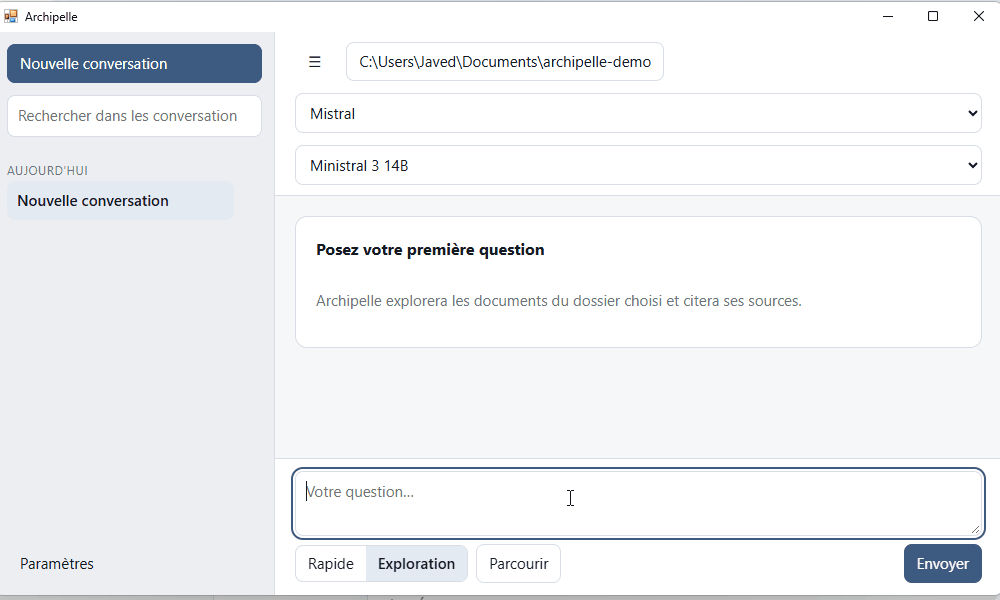
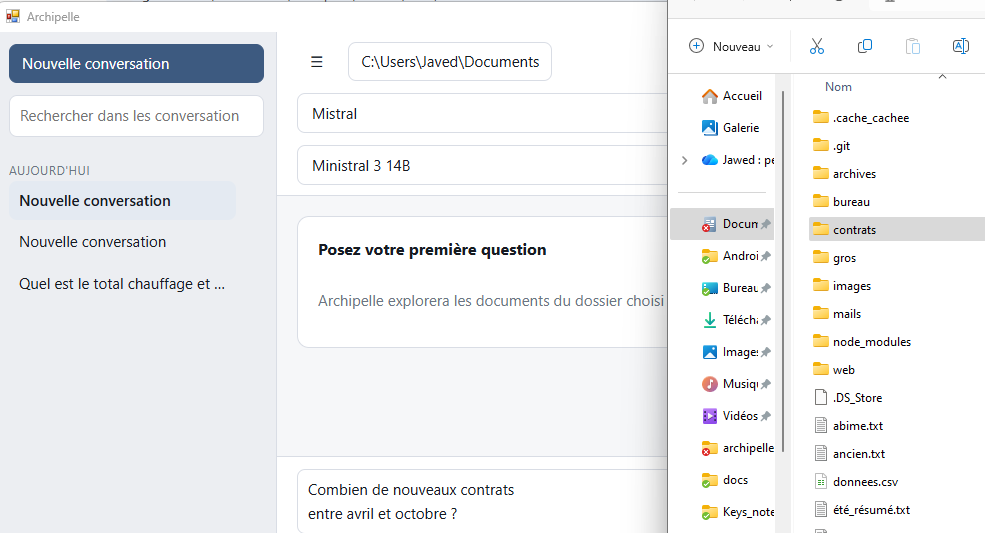
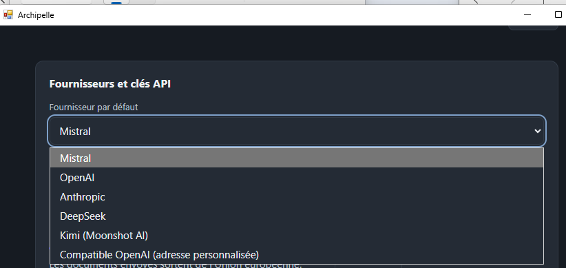

Finding a piece of information in your own files is a mundane problem, and a curiously unsolved one. Operating-system search engines look for file names; AI tools almost all require building a copy of your documents in a specialized database first.
Archipelle takes the problem from another angle. It is a desktop application you ask a plain-language question about a folder on your computer. It looks for the answer right when you ask, reads the documents that seem relevant, and replies while citing the files it used.

Searching instead of indexing
Most tools that "chat with your documents" rely on the same mechanism: an indexing phase splits every file into fragments, converts them into numerical vectors and stores them in a dedicated database. The search then happens in that database — never in the original files.
This has practical consequences. You must wait for indexing to finish before asking your first question. You must re-run it after every modification, or work from a stale image of the folder. And somewhere on your disk, there now exists a second copy of your documents' content.
Archipelle has no vector database. An agent walks the working folder's tree, searches inside file contents, opens the ones that look useful and reads the passages that answer the question. Nothing is prepared in advance, nothing is copied elsewhere. The folder you point it at is read as it is, at the moment you ask the question.
Sources verified by the program, not by the model
A language model asked to cite its sources produces plausible references — which is not the same as accurate ones. It is one of the most common forms of hallucination, and one of the hardest to spot, because an invented file name looks a lot like a real one.
Archipelle does not trust the model on this point. The program keeps the list of files it actually opened and read during the search. When the answer cites a source, that citation is checked against this list: if the file is not in it, it is displayed as unverified. The verification is done by the software, from what it actually did — not by the model, from what it claims.
That is a difference in nature. The reader does not have to take the answer at face value: every source is a clickable file, which can be opened to check by hand.
What Archipelle does
- It explores on demand. The agent walks the chosen folder's tree, searches the contents, and opens the documents that seem to hold the answer. No prior indexing, no copy of your files.
- It cites its sources. Every statement links to a clickable file. A source the program did not actually read is flagged as unverified.
- It shows its work. A transparency area displays live searches, the files consulted and the ones that were set aside, with the reason they were.
- It says what it did not do. Search that hit its ceiling, unprocessed scanned document, protected file: these gaps are announced in the answer, never swept under the rug.
- It stops when asked. A stop button immediately interrupts the ongoing search.
That last point deserves a pause. A tool that announces its own limits is more useful than a tool that always answers: knowing a search only covered part of the folder changes the confidence you place in the answer, and lets you rephrase the question or narrow the working folder.
Two ways to search
Fast mode suits everyday searches: it goes straight to the point and answers in few steps. Exploration mode pushes the search further, with more successive steps, and turns on text recognition for scanned documents. It is slower, and is best kept for questions that deserve it.
Formats it reads
Installation
Archipelle installs from PyPI, the Python package repository. The only prerequisite is Python 3.12 or newer. Two commands are enough: the first installs the application, the second launches it.
$ pip install archipelle
$ archipelleIf you use uv, the installation goes through an equivalent
command. uv is a recent Python package manager, faster than pip, which
installs every tool in its own isolated environment — handy if you already have several
Python programs on your machine and would rather they not step on each other.
$ uv tool install archipelle
$ archipelleReading scanned documents
Optical character recognition — OCR, which reads a scanned PDF or a photo of a document — relies on Tesseract, a separate program to install once and for all.
$ brew install tesseract tesseract-lang$ sudo apt install tesseract-ocr tesseract-ocr-engOn Windows, use the UB Mannheim Tesseract installer, remembering to tick the language pack you need during installation.
This step remains optional. Without Tesseract, Archipelle works normally: scanned documents are simply reported as unread in the answer. No error message, no blocking — you just know they were not taken into account.
On Linux
Archipelle's interface relies on the system's rendering engine, which is not always installed by default.
$ sudo apt install libwebkit2gtk-4.1-0 gir1.2-webkit2-4.1First steps
- Choose a working folder. On first launch, the home screen asks which folder Archipelle is allowed to search, and which AI provider to use. That folder, and it alone, will be explored.
- Enter your API key. It goes into Settings. Archipelle stores it in a separate file with restricted access permissions, and never displays it in clear again.
- Ask your question. In plain language. The transparency area shows the search progressing while the answer is being composed.

Accepted AI providers
Archipelle does not ship a model: it connects to the one of your choice, with your own key. Readers who care about data processing will note that Mistral handles requests within the European Union, and that the application can also talk to a local server — in which case no data leaves the machine, excerpts included.

With some free tiers, the most renowned models refuse requests and return a rate-limit error. At Mistral, the Ministral 3 models work in that case. Advanced Settings also let you enter the identifier of the model of your choice directly.
What happens to your documents
This is the question that decides what such a tool can be used for, so let's answer it precisely.
- Your files stay with you. Only the excerpts needed for the answer are sent to the AI provider you chose. A warning flags providers located outside the European Union.
- Archipelle cannot write. No writing tool exists in the program: it cannot modify, delete or create any file in your folder. Access is read-only — a clear contrast with agents granted write permissions.
- History stays local. Conversations, the extraction cache and logs are stored on your machine, and can be erased from Settings.
- API keys are never logged. They appear in no log file.
Known limits
An honest tool announces what it does badly. Here are the four limits the project accepts.
- Very small models struggle. Below eight billion parameters, a model has a hard time chaining the successive tool calls an exploration requires. A beefier model is better.
- The search is capped. On a very large folder, the exploration stops before seeing everything, and the answer then states that coverage is partial. That is a design choice, not a defect: the ceiling exists so the search ends.
- OCR depends on an external program. Tesseract installs separately, and its absence limits reading scanned documents.
- Answer quality depends on the model. Archipelle organizes the search and verifies the sources; the quality of the final writing remains that of the model you chose.
An open project
Archipelle is free software, published under the MIT license: the code can be used, modified and redistributed freely, including commercially, with the only obligation of keeping the copyright notice. The source code is available on GitHub, and the package is published on PyPI.
Contributing
The project sets up with uv, and tests cover both the Python side and the web interface.
$ git clone https://github.com/Jean-Jawed/archipelle
$ cd archipelle
$ uv sync # environment and dependencies
$ uv run archipelle # launch the application
$ uv run pytest # Python tests
$ npm install && npm test # web interface tests
$ uv run ruff check # lint
$ uv run pyright # typesCredits
Archipelle was developed in partnership with Virgule-Studio, which provided the technical resources and the overall architecture of the project.
Development is led by Jean-Jawed, who publishes the code and follows feedback on the project's GitHub repository.
The project is available today, and will open to a wider audience soon.
Discover Archipelle on GitHub Or, if the terminal does not scare you:pip install archipelle